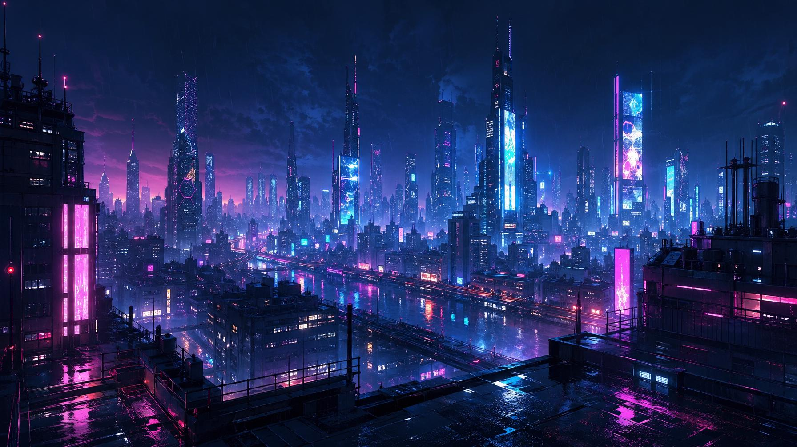
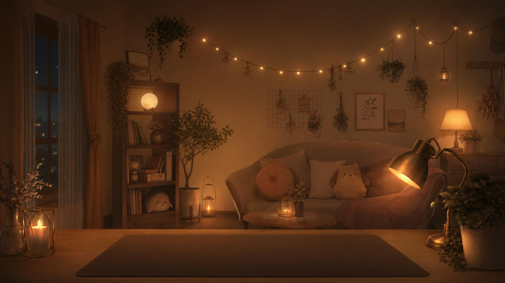
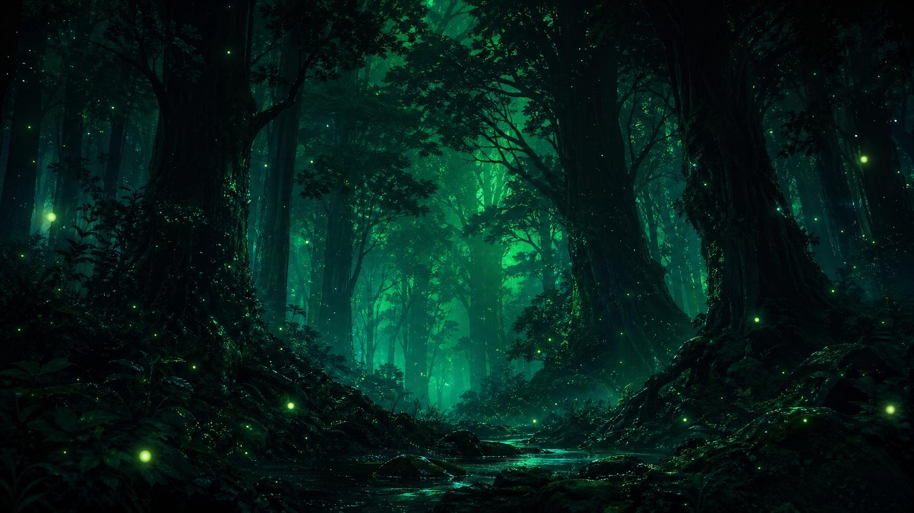

Iconography & scenes
Animetta ships two visual asset libraries: a small set of section icons for navigation, and a curated set of atmosphere backgrounds for the Live2D stage. The icons are pure single-line strokes; the backgrounds are full-bleed anime paintings. They sit at opposite ends of the visual scale on purpose.
Section icons
One icon per top-level concern. Each lives under
/icons/<key>/<key>.png and is exactly
64×64, white-on-transparent so it can be tinted by the surrounding state.
In context
Section icons appear in two places: as tab pills in the Settings drawer, and as row markers in the Settings list. They never appear inline in chat copy.
① Settings tabs
20 px icon + label. Active tab takes the accent color; idle tabs sit at text-dim.
② Settings rows
18 px icon in a pink ring. State value lives in mono on the right.
Style rules
① Soft single-line strokes
Section icons are minimal single-weight line drawings — readable at
18 px and recognizable at 64. No two-tone fills, no chunky solid
glyphs. For chevrons, ×, dots and the like, draw inline SVG with
currentColor at 14–16 px instead of shipping a PNG.
② White on transparent, tinted in CSS
Source PNGs are white-on-transparent. They take their color from the surrounding state: pink ring when idle, pink drop-shadow glow when active. Never bake the accent color into the asset itself.
③ Always paired with a label
No icon ever ships alone. There is no spelunking — Animetta users are looking at a small panel, and there is room for both the icon and the word.
④ Size ladder · 18 / 20 / 36 / 48
18 px in list rows, 20 px in tabs, 36 px in the section showcase, 48 px in the welcome screen. The 64 px native asset always downsamples cleanly — never upscale beyond 64.
04b · Atmosphere
Background scenes
Animetta ships seven curated scenes — full-bleed anime backgrounds that
sit behind the Live2D character and define the mood of the conversation.
Users pick one in Settings → Background; the choice persists to
localStorage under
animetta_background.
Sakura at night
The first thing a new user sees. Establishes the brand palette in a single image — pink petals on deep violet — before they've read a single line of UI.



Built-in fallback
When no scene image is available — first launch before the user has
chosen, or a corrupted preference — Animetta falls back to a
default.svg CSS gradient. It uses the same
palette as the brand so the loading state never breaks the mood.
default.svg
A pure-vector gradient that ships in the bundle. Renders instantly, weighs less than 1 KB, and serves as the always-available placeholder while the chosen scene loads from disk.
New scenes are added by dropping a 1920×1080 PNG into
public/backgrounds/ and registering the
filename in BackgroundSettings.vue.
Composition rules
① Center-clear
The Live2D character lives in the lower-center third. Scene focal points must sit in the upper third or far edges so they don't fight the avatar's face.
② Dim enough for glass
Chat glass panels float over scenes. If your scene averages brighter
than ~30% L*, the glass will read as a frosted
rectangle instead of a window. Mostly-dark scenes only.
③ One light source
Every scene has a single directional warmth source (sunset, lamp, street neon). It gives the page a believable "where is the light coming from?" and ties to Anima's character lighting.
④ No on-canvas text
Backgrounds carry no logos, watermarks, or shop signs in legible characters. The UI provides all text; the scene is mood only.